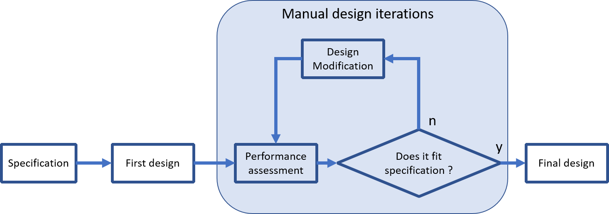
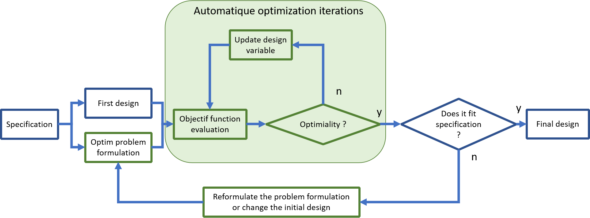

Support material#
Author: Emile Roux (emile.roux@univ-smb.fr), Ludovic Charleux
..This notebook is ready for RISE Slideshow
General Scope#
Optimization is the process of finding the best solution to a problem under a set of constraints. It is a fundamental concept in many fields, including mathematics, engineering, economics, and computer science. Optimization plays a critical role in various applications, including product design, scheduling, logistics, finance, and data analysis.
The goal of optimization is to find the optimal value of a function, which is a measure of the objective of the problem. The objective function can be either to maximize or minimize a certain quantity, depending on the nature of the problem. The optimal solution is the set of values of the decision variables that maximizes or minimizes the objective function while satisfying the constraints.
Optimization probleme formulation#
The formulation of an optimization problem (minimization or maximization) goes through the following steps:
Objective: The goal to be achieved by optimization.
Variables: The elements that can be adjusted to achieve the objective.
Constraints: The limits or rules that must be respected during optimization.
Objective function: The mathematical function that must be optimized to achieve the objective.
Resolution method: The technique used to find the best possible solution taking into account the objective, variables, constraints, and the objective function.
Example
The Traveling Salesman Optimization Problem:
Objective: Minimize the total distance traveled by a salesman visiting a set of cities and returning to the starting point.
Variables: Binary variables representing whether a path between two cities is taken or not.
Constraints: Each city must be visited exactly once (except the starting and ending city).
Objective function: A function that calculates the total distance traveled based on the binary variables representing the chosen paths.
Resolution method: Combinatoir optimization methode

Example
The mechanical design optimization problem of a structural part:
Objective: Maximize the strength of the structural part while minimizing its weight.
Variables:Section, dimensions of the part.
Constraints:
Stress constraints to ensure that the part can withstand the applied loads without failure.
Manufacturing constraints such as minimum feature sizes and wall thicknesses.
Objective function: A function that calculates the strength of the part based on the chosen design variables and the applied loads, while taking into account the weight of the part.
Resolution method: Gradient base optimisation methode that include constraint if necessary.
Exemple of the design process#
The conventional approach, described below, consists of a series of trial and error steps until a design that meets the specifications is obtained.
This approach, if it involves prototyping, can be very time consuming and resource intensive.

Automatique optimization can help to improve a design process.
The trial and error phase is replaced by an automatic phase: performance evaluation (cost function) combine with design modification.

This automation allows to save time in the development process.
But it has a counterpart, it is necessary upstream to formulate the optimization problem and to be able to evaluate automatically a possible disgne.
{citep:ps}’mdobook2022’
Mathematical formulation#
Scope#
Mathematical optimization aims at solving various kinds of problems by minimizing a function of the form:
Where \(f\) if the cost function, \(X\) is a \(N\) dimensional vector of parameters and \(e \in \mathscr R\).
More informations about the underlying theory, the nature of the solution(s) and practical considerations can be found:
On Wikipedia,
On (excellent) Scipy lectures.
Solving#
Scipy offers multiple approaches in order to solve optimization problems in its sub package optimize
General purpose approach#
scipy.optimize.minimize allows one to use multiple general purpose optimization algorithms.
Below a basic exemple is presented :
Objective: Finde the mimimun au a finction \(f\).
Variables: \(X\).
Constraints: Nonz.
Objective function: \(f(X) = \sum_{i}^{} X_i\).
Resolution method: Neder-mead methode (local minmum finding, an initial guess is mandatory).
from scipy import optimize
def f(X):
"""
Cost function.
"""
return ((X - 1) ** 2).sum()
X0 = [0.0, 0.0] # Initial guess
sol = optimize.minimize(f, X0, method="nelder-mead")
X = sol.x
print("Solution: ", X)
Solution: [1.00002112 1.00003894]
Specif case of curve fitting using least squares#
In order to perform curve fitting in a more convenient way, scipy.optimize.curve_fit can be used.
def func(x, omega, tau):
return np.exp(-x / tau) * np.sin(omega * x)
xdata = np.linspace(0, 3.0, 100)
y = func(xdata, omega=2.0 * np.pi, tau=10.0)
ydata = y + 0.5 * np.random.normal(size=len(xdata))
params, cov = optimize.curve_fit(func, xdata, ydata)
omega, tau = params
ysol = func(xdata, omega, tau)
fig = plt.figure(0)
plt.clf()
plt.plot(xdata, y, label="Target")
plt.plot(xdata, ydata, "o", label="Target + noise")
plt.plot(xdata, ysol, label="Solution")
plt.grid()
plt.xlabel("$x$")
plt.ylabel("$y$")
plt.legend()
plt.show()